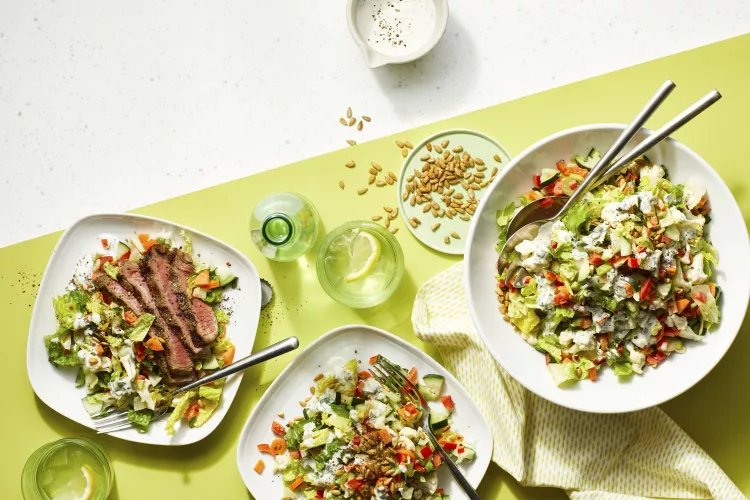

Home
Chopped Salad with Buttermilk Dressing

Description
Creamy buttermilk dressing and fresh garden veggies add up to more than the sum of their parts in this crunchy, crave-able chopped salad recipe. The Allrecipes Magazine recipe is based on Whole Plant Chopped Salad. Cover the dressing and refrigerate for up to one week.
Ingredients
- 1/2 cup buttermilk
- 1/4 cup mayonnaise
- 1 tablespoon lemon juice
- 1 teaspoon Dijon mustard
- 1 teaspoon garlic powder
- 1/2 teaspoon salt
- 1/4 teaspoon black pepper
- 4 cups chopped romaine lettuce
- 1 cup cherry tomatoes, halved
- 1 cucumber, diced
- 1/2 red onion, diced
- 1/2 cup shredded carrots